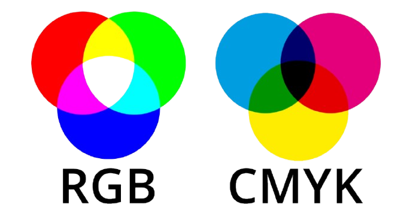

Het RGB-kleurmodel wordt gebruikt om kleuren te maken op een scherm, zoals een tv of computer. RGB staat voor rood, groen en blauw. Door deze drie kleuren licht te mengen, ontstaan andere kleuren. Als je geen licht gebruikt, krijg je zwart. Als je alle drie op volle sterkte gebruikt, krijg je wit. Elke kleur kan een waarde krijgen van 0 tot 255. Bijvoorbeeld: RGB(255, 0, 0) is rood, RGB(0, 255, 0) is groen en RGB(0, 0, 255) is blauw. Zo werkt RGB om kleuren te maken met licht.
Het CMYK-kleurenmodel is een manier om kleuren te maken met inkt. Het wordt gebruikt bij printen. CMYK betekent: cyaan (blauw), magenta (roze/rood), geel en zwart. Door deze vier kleuren te mengen, kun je bijna alle andere kleuren maken. Hoe meer inkt je gebruikt, hoe donkerder de kleur wordt. Zwart wordt apart gebruikt om teksten en donkere stukken echt zwart te maken. Dit model wordt vooral gebruikt voor dingen die op papier worden geprint.